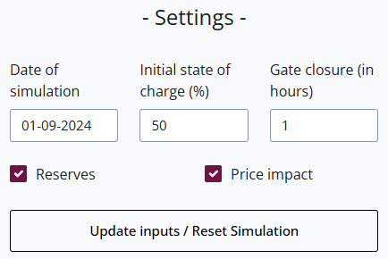
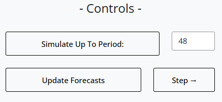
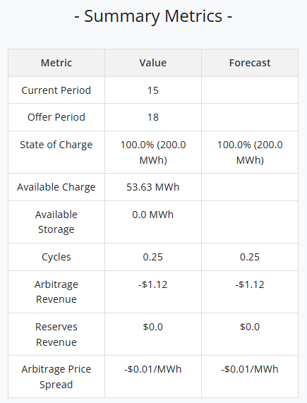
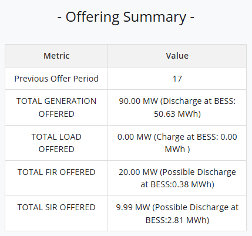
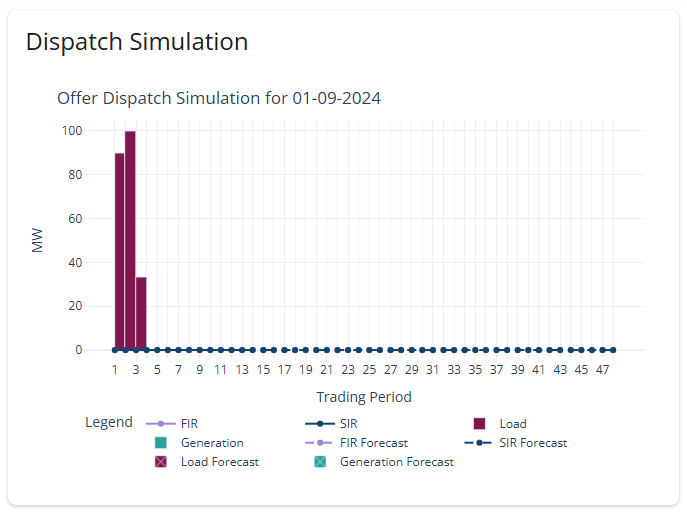
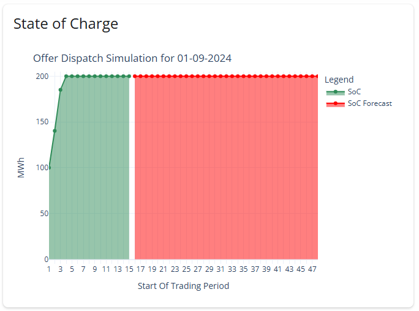
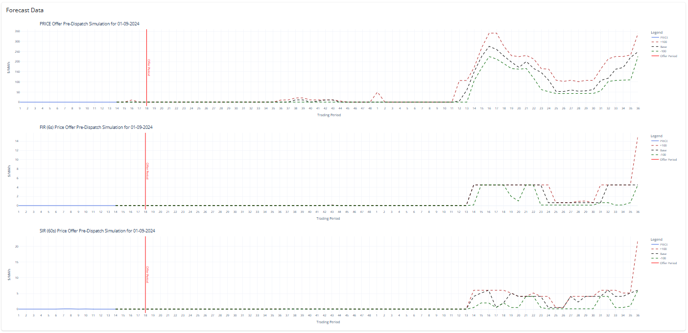
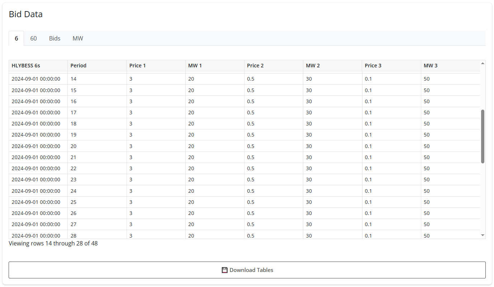

Interface
Sidebar Settings Controls Summary Metrics Offering Summary Download Outputs Plots & Tables Dispatch Plot SoC Plot Forecast Plots Bid TablesDispatch and Offering Logic
Invalid offer handling Curtailment of over offering Dispatch Priorities Examples Example of Gate Closure Example of Price ImpactDocumentation for the BESS trading simulator
About this App
The intent of this tool is to simulate the trading of the BESS for historic dates, using real time forecast prices to show how price movement and changes in forecasts can affect trading outcome throughout the day.
Supported Versions:
Each version can be used in its demo version, which uses the app's local files.Interface
Sidebar
Overview of sidebar features.
Settings
These controls can be used to reset the simulation and modify its inputs:

- Date of simulation: Sets the simulation day. The dates available depend on the data available in the database. When the application is in demo mode, the dates available depend on the data in the application's local files.
- Initial state of charge: Sets the initial BESS charge level as a percentage. (Based on a 200MWh capacity)
- Gate closure: Sets the gate closure in hours between 0 and 2h.
- Reserves: Whether or not to include reserves in the simulation, turning this off will mean all reserve offers are set to 0 automatically.
- Price impact: A feature that turns on or off the effect that offering the BESS has on the final market price.
- Offering generation could reduce price and offering load could increase price.
- Update inputs/Reset simulation: Once the previous values have been set, click on this button to update the simulation. You can also click on this button to reset the simulation when it is finished or in progress.
Controls
These commands control the simulation:

- Simulate up to period: Simulates offering and dispatching up to a specified period (1-48) while keeping the same offers.
- Update forecasts: Activates and updates the potienal state of charge and dispatch outcomes based on the current offers and the base forecast schedule.
- Step: Runs the simulation for the next period.
Summary metrics
This table provides key metrics for the current simulation period:

- Current period: Current period of the simulation.
- Offer period: Period you offer when you click on next step.
- State of charge: SoC percentage and energy at the start of the current period.
- Available charge: The amount of charge in the BESS that you can offer to the market.(Based on possible outcomes from offers locked in gate closure)
- Available storage:The amount of storage in the BESS that you can offer to the market.(Based on possible outcomes from offers locked in gate closure)
- Cycles: Total number of cycles of the BESS
- Arbitrage revenue: Revenue Generated from load and generation
- Reserves revenue: Revenue Generated from FIR and SIR
- Arbitrage price spread: Weighted average price difference between load and generation
Offering summary
This table shows the actual offer volumes from the pervious offer period:
These volumes will not always match the amounts in the offer table is due to the curtailment for over offering among other reasons.
For more information about this process see the Dispatch and Offering Logic Section

- Previous offer period: Latest simulated period.
- Total generation offered: Power and energy cleared for offering during last period offered.
- Total load offered: Power and energy cleared for offering during last period offered.
- Total FIR offered: FIR power and energy cleared for offering during last period offered.
- Total SIR offered: SIR power and energy cleared for offering during last period offered.
Download output button

Use this button to download the simulation values in a csv file.
Plots & tables
Main content
Dispatch plot

This graph represents the power dispatched during the simulation for the simulation date, over 48 trading periods.
It shows the various dispatch components, including FIR, SIR, load and generation, and their forecasts when active (see control buttons).
Like all the other graphs, It can be displayed in full screen mode (click on the icon at the bottom left when you move the mouse over the graph),
saved as a png and zoomed in/out.
State of Charge plot

This graph represents the BESS's remaining energy or state of charge over 48 trading periods of the simulation date.
Forecast plots

These 3 graphs (spot + reserves) show the price forecasts for the simulation day and for the start of the following day.
There are 3 scenarios: a base one and two showing prices with +100 MWh and -100 MWh of demand.
The offer period is represented by a red line that can be hidden by clicking on its name in the legend.
Bid tables
These tables represent default offers for several bands and for each period of the simulation date. There are 4 tabs:
- 6: ...
- 60: ...
- Bids: ...
- MW: ...
Dispatch and Offering Logic
This section will outline the different components of how the code operates in regard to handling offer and dispatch, including:- Invalid offer handling
- Curtailment of over offering
- Dispatch priorities and constraints
Invalid offer handling
Invalid Offers are offers that are not allowed no matter the state of the current storage or previous offers, this includes:- Offering MW volumes above BESS capability/Ratings
- Offering generation and load at overlapping prices
- e.g., offering to charge for more than you would discharge
- This is not allowed and could result in BESS being called to charge and discharge at the same time (Not physically possible)
- Offering prices and volumes that are too small
- $0.01/MWh for prices
- 0.001MW for volumes
Curtailment of over offering
This happens when an offer is made that cannot be met due to storage constraints or offer constraints:
We refer to storage constraints being when there is not enough charge in the BESS to dispatch all the generation in the offers or there too much charge/not enough storage to charge the total volume of load offered.
The other possible reason for curtailment is due to offers locked within gate closures.
When an offer is in gate closure the trader no longer has any control over how the BESS will dispatch, if 100MW of charge and 50MW of discharge have been offered within the gate closure period there is no way to know for certain if the BESS will be called to charge 100MW or discharge 50MW.
This leaves us with two possible constraint boundaries, one represents the lowest possible SOC outcome from the current offers lock in gate closure and the other represents the highest possible SOC outcome.
Discharge offers (Energy and Reserves) are constrained by the lowest SOC outcome and charges offers (Bids) are constrained by the highest SOC outcome.
For charge offers curtailement is simple, the highest prices are curtailed first.
For discharge it is a little different, the BESS will curtail the discharge offers of the lowest price first (usually FIR and SIR).
However if two offers have the same price then offers are curtailed based of the amount of energy discharge required so Energy first then SIR then FIR
(Energy required 30mins of discharge, SIR 15mins and FIR 1 minute, therefore imply that if they are offer at the same price FIR will provide the best value)
Dispatch priorities and constraints
Once the offers have been curtailed and are now at the point of dispatch there is another decision the code has to make around how to prioritize the dispatch of Reserves vs Energy. This is because the system operator allows a participant to offer a combined volume of energy and reserves above the nameplate capacity ( Example 100MW BESS can offer 100MW Energy, 100MW SIR and 100MW SIR). The same MW can be offered for FIR and SIR however the same MW cannot be offered for Energy and reserves.
So, in the example above some of the possible dispatch outcomes are (Assuming complete dispatch):- 100MW Energy
- 100MW FIR and 100MW SIR
- 50MW Energy, 50MW FIR and 50MW SIR
- Or any combination where Energy+max (FIR,SIR) <= Capacity
In the market the System operate will maintain this constraint and dispatch based on the lowest cost to the overall system.
However, in this case we don’t have to simulate the entire market so need to make some assumptions, The assumption is that the dispatch is going to be carried out based on the maximum return to the BESS,
(As energy prices usually> Reserve prices this means FIR and SIR are a lot less likely to be dispatched).
Note that this issue is not a problem for Bids as reserves can be offered essentially as a curtailment of bids/load.
Examples
Example of Gate Closure: 1 Hour
If your current period is 5, the periods you can offer for are period 8 and onwards. At period 5 you know the outcomes for period 1-4, you do not know the outcomes for period 5 as you are currently experiencing it. You also don’t know the outcomes for period 6 and 7 because they have not happened yet, however you cannot adjust your offers for these periods because they are within gate closure.
Example of Price Impact
For period 5 the price impact is calculated by taking the difference between the forecast Base price and the -/+100 MW sensitivity prices for period 5 as seen at period 4 and then dividing by 100. This is then applied linearly to every MW dispatch by the BESS. If at period 4 the base forecast price for period 5 is $100/MWh, $150/MWh for +100 and $50/MWh for -100 then there is a $0.5/MWh/MW scaling applied to any MWh charged or discharged from the BESS. If the Final price ends up being $90/MWh but the BESS has dispatched 50MW of generation then the price will be reduced by 0.5*50 =$25/MWh down to $65/MWh. However, if the BESS is offering at a price above $65/MWh then it will become marginal, eg if offer price was $70/MWh then the BESS will only be partially dispatched to the amount that will reduce the price to $70/MWh (40MW).
Troubleshooting
Common Issues
Contact Support
Feel free to contact us to report a bug or request a feature: genesis.support@broadsolutions.co.nz